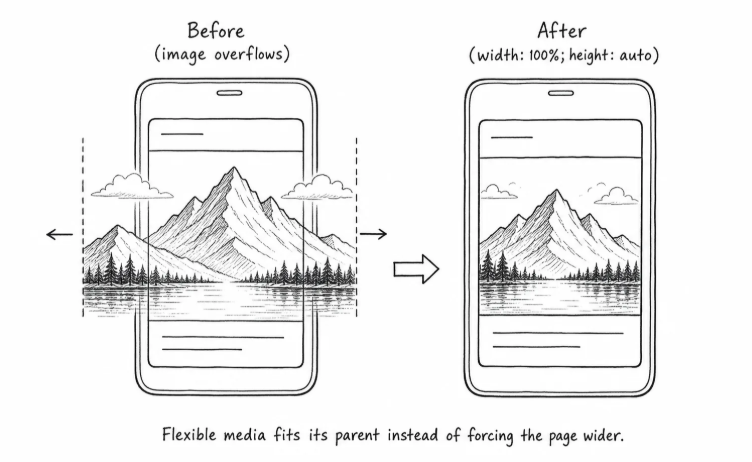
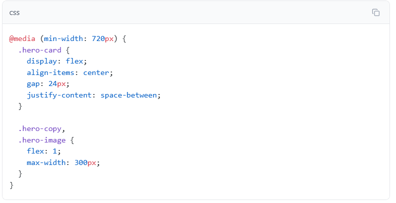
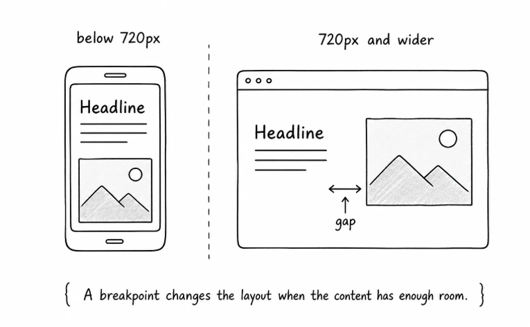

Fluid containers
Let the page use available space without forcing one fixed width.
CSS practice
A responsive page should stay readable and usable as the browser gets narrower or wider.

Let the page use available space without forcing one fixed width.
Let images shrink with their parent so they do not overflow.

Change the layout when the content needs more room, not because of a device name.
The single-column layout works well on narrow screens. On wider screens, the hero image has enough room to sit beside the text.
That is what a media query is for. A media query applies CSS only when a condition is true.
@media (min-width: 720px) means "use these rules when the viewport is at least 720px wide."
The normal CSS handles small screens first, and the media query adds a wider layout only when there is enough space.
Resize the browser. Below 720px, the hero should stack; at 720px and above, it should become a two-column hero.

Inside the media query, .hero-card becomes a flex container. Its direct children, .hero-copy and .hero-image, sit in a row.
align-items: center lines the text and image up vertically, and gap: 24px creates space between them.
flex: 1 lets the text area and image share the available row space.

A breakpoint is the point where your CSS changes because the layout needs a different shape.
The breakpoint should come from the content. If the hero feels cramped at 680px, do not force it into two columns. If it has enough room at 720px, that may be a good breakpoint.
Avoid thinking only in device names like "phone", "tablet", and "desktop". Device sizes change, and content needs are easier to reason about.
Resize until the layout complains - To choose a breakpoint, resize the browser slowly. Add a media query where the content starts to feel cramped, stretched, or awkward.